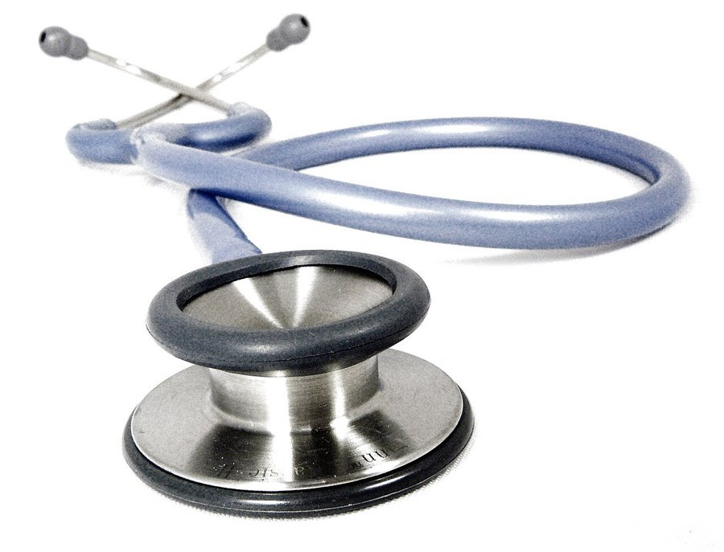

Testosterone Levels by Age: What's Actually Normal
Testosterone peaks in a man's late teens to twenties, then drifts down gradually from the thirties on. A number alone rarely tells the whole story.

Key takeaways
- Most labs consider 300 to 1,000 ng/dL the normal total testosterone range for adult men, though the exact cutoff varies by lab and testing method.
- Testosterone peaks around age 19 to 20 and declines gradually afterward, typically by about 1 to 2 percent a year starting in a man's 30s.
- A low number on one test isn't a diagnosis. Levels swing with time of day, sleep, illness and stress, so guidelines call for at least two morning tests before concluding testosterone is truly low.
- Symptoms matter as much as the number. Low energy, reduced libido, and loss of muscle mass alongside a low lab value point toward hypogonadism; a low number with no symptoms often doesn't need treatment.
- See a doctor rather than self-treating if you suspect low testosterone; unsupervised testosterone use carries real risks, including suppressed natural production and fertility effects.
Testosterone levels by age follow a fairly predictable arc: they rise sharply through puberty, peak in the late teens to early twenties, hold roughly steady through the late twenties, and then decline gradually from the thirties onward. Most clinical reference ranges put normal total testosterone in adult men somewhere between 300 and 1,000 nanograms per deciliter (ng/dL), though the exact numbers vary by lab.
That range is wide on purpose. Healthy men vary a lot in baseline testosterone, and the number that matters for any one person is less about where it sits in that range and more about whether it's dropped enough, and come with enough symptoms, to count as a problem. Here's what the research says about how testosterone actually changes with age, and when a low number is worth addressing.
What is a normal testosterone level for my age?
| Age range | Typical total testosterone (ng/dL) | General pattern |
|---|---|---|
| 12–18 (puberty) | Rising from under 100 to adult range | Rapid increase through puberty |
| 19–29 | Roughly 400–1,000+ | Peak years |
| 30–39 | Roughly 350–900 | Gradual decline begins |
| 40–49 | Roughly 300–850 | Continued slow decline |
| 50–59 | Roughly 300–800 | Decline continues; more variability between men |
| 60+ | Roughly 250–750 | Lower average, but many men stay well within range |
These are approximate bands pulled from commonly cited clinical reference ranges, not a precise formula. Individual labs set their own normal ranges based on their specific assay, so two men with the same actual testosterone level could get slightly different "normal" labels depending on where they were tested.
Why does testosterone decline with age?
The decline is driven mostly by changes in the testes themselves, which gradually produce less testosterone per unit of stimulating hormone from the brain, plus a rise in sex hormone-binding globulin (SHBG), a protein that binds testosterone and makes less of it available for your cells to use. Both processes happen slowly and vary a great deal between individuals.
Lifestyle factors speed the decline in some men more than others. Excess body fat, poor sleep, chronic stress, heavy alcohol use, and a sedentary lifestyle are all associated with lower testosterone independent of age. That's one reason two 55-year-olds can have very different numbers.
At what age does testosterone start dropping?
Most research places the start of the decline in the early-to-mid 30s, with an average drop of roughly 1 to 2 percent per year from that point on. It's a slow slope, not a cliff: the difference between one year and the next is usually too small to notice, which is part of why low testosterone often goes unrecognized until the cumulative effect becomes significant.
A smaller subset of men experience a steeper drop or develop clinically low testosterone (hypogonadism) well before typical "andropause" age, often tied to an underlying condition like obesity, type 2 diabetes, pituitary or testicular disorders, or certain medications.
What symptoms suggest testosterone might actually be low?
- Persistent low energy or fatigue not explained by poor sleep.
- Reduced interest in sex or fewer spontaneous erections.
- Loss of muscle mass or strength despite consistent training.
- Increased body fat, especially around the midsection.
- Low mood, irritability, or trouble concentrating.
- Reduced body or facial hair growth over time.
None of these symptoms is specific to low testosterone on its own. Fatigue, low mood and reduced libido overlap heavily with depression, poor sleep, thyroid problems and simple overtraining. That overlap is exactly why a lab test, not a symptom checklist alone, is the next step.
How is low testosterone actually diagnosed?
Guidelines from endocrine societies call for at least two separate morning blood draws, typically between 7 and 10 a.m. when levels run highest, before diagnosing low testosterone. A single afternoon test that comes back low is common and not, by itself, a diagnosis, since testosterone can swing noticeably across a single day.
A diagnosis of hypogonadism generally requires both a consistently low lab value and symptoms that fit the picture. Some clinicians also check free testosterone (the fraction not bound to proteins) and SHBG, since total testosterone alone can be misleading in men with unusually high or low SHBG.
Does low testosterone always need treatment?
No. A man with a borderline-low number and no symptoms often doesn't need treatment, just monitoring. Testosterone replacement therapy (TRT) is generally reserved for men with both confirmed low levels and meaningful symptoms, and it comes with real tradeoffs: it can suppress natural testosterone production, reduce fertility, and requires ongoing monitoring of red blood cell counts and prostate health.
For men whose low testosterone is tied to a reversible factor, obesity, poor sleep, heavy drinking, uncontrolled blood sugar, addressing that factor first sometimes raises levels meaningfully without medication. A doctor, not an online calculator, is the right person to weigh treatment against watching and waiting.
Can you raise testosterone naturally as you age?
Within limits, yes. Resistance training, adequate sleep, maintaining a healthy body weight, and moderating alcohol intake are all associated with higher testosterone relative to men who don't do these things, though the effect size varies and none of them will restore a genuinely low level to a healthy one on their own.
Some supplements marketed for "testosterone support" lean on ingredients with modest evidence, like zinc or vitamin D in men who are actually deficient in them, but a healthy, non-deficient man generally won't see a meaningful boost from supplementing nutrients he already has enough of. If you're weighing one of these products, our Vigor Boost review and HorseBoost review walk through what each label actually discloses.
Is testosterone decline the same thing as andropause?
"Andropause" is a popular but informal term, not a precise medical diagnosis the way menopause is for women. Unlike menopause, which involves a relatively sharp hormonal drop over a few years, the male testosterone decline is gradual and highly variable. Some men in their 70s have testosterone levels comparable to men decades younger.
What's the difference between total and free testosterone?
Total testosterone measures every bit of the hormone in your blood, including the large share bound to proteins (mostly SHBG and albumin) that isn't biologically active. Free testosterone measures only the small unbound fraction, roughly 1 to 2 percent, that's actually available for your cells to use.
Most routine screenings start with total testosterone because it's cheaper and more standardized. But a man with high SHBG can have a normal total testosterone while his free testosterone runs low, and vice versa. That's why a doctor sometimes orders a free or bioavailable testosterone test when total testosterone doesn't match the symptoms a patient describes.
Why do testosterone numbers vary so much between labs?
Different labs use different assay methods, and some older immunoassay techniques are known to be less precise than newer mass spectrometry-based tests, particularly at the lower end of the range. That's part of why a reference range from one lab report can look slightly different from another's, even for the same patient on the same day.
For this reason, doctors generally track a patient's trend over repeated tests at the same lab rather than treating a single number against a generic online chart as definitive. If you're comparing a result against a range you found online, treat it as a rough guide, not a precise cutoff.
What lifestyle factors have the most evidence for supporting healthy testosterone?
- Resistance training, particularly compound lifts like squats and deadlifts, has more consistent evidence for supporting testosterone than cardio alone, though both forms of exercise help indirectly through better body composition.
- Sleep of 7 to 9 hours matters more than most men assume. Studies restricting sleep to five hours a night in young men found measurable drops in testosterone within about a week.
- Maintaining a healthy body fat percentage helps because fat tissue converts testosterone into estrogen; carrying significantly more body fat than ideal is one of the stronger lifestyle drivers of low testosterone.
- Moderating alcohol, since heavy, regular drinking is linked to lower testosterone and can directly impair testicular function over time.
- Managing chronic stress, since persistently elevated cortisol competes with the hormonal pathway that produces testosterone.
None of these replace medical treatment for a man with confirmed hypogonadism, but for a man whose levels sit in the lower-normal range without a clear medical cause, they're the interventions with the most support behind them, well ahead of any supplement.
What happens if a doctor starts testosterone replacement therapy?
TRT comes in several forms: injections, topical gels, patches, or pellets, each with different dosing schedules and cost. Whichever form is used, the goal is to bring testosterone back into a normal range and ease symptoms, not to push it to the high end or beyond.
Monitoring matters because TRT can raise red blood cell counts (sometimes requiring dose adjustment or blood donation to manage it), can suppress the body's own testosterone and sperm production, and needs periodic prostate-specific checks in men with existing prostate risk factors. Most guidelines call for follow-up labs at 3, 6, and 12 months, then annually.
Men hoping to have children later should bring that up before starting, since TRT shuts down the signal the testes need to keep producing sperm, and that effect doesn't always reverse quickly once treatment stops. Fertility-sparing alternatives exist for some men, and it's a conversation worth having up front rather than after the fact.
When should you actually get tested?
It's reasonable to ask for testing if you notice a cluster of the symptoms above lasting more than a few weeks, especially fatigue combined with reduced libido or unexplained loss of muscle mass. Routine testosterone screening in men without symptoms isn't generally recommended, since a low number without symptoms rarely changes management. For more on the symptoms and conditions that come up most for men as they age, see our Men's Health hub.
Frequently asked questions
Can stress really lower testosterone?
Yes, at least temporarily. Chronic stress raises cortisol, which can suppress the hormonal signals that drive testosterone production. Short-term stress has less effect, but ongoing high stress is one of the more modifiable factors that can depress levels.
Does testosterone drop suddenly at a specific age, like 40 or 50?
No. There's no cliff at a round-number birthday. The decline is a slow, roughly linear slope that starts in the 30s for most men, which is why many don't notice it until the cumulative drop becomes significant years later.
Can obesity lower testosterone even in younger men?
Yes. Excess body fat, particularly visceral fat, increases conversion of testosterone to estrogen and raises inflammation that can suppress the hormonal signals from the brain. This effect isn't limited to older men.
Is a home testosterone test accurate?
Saliva-based home tests are generally less reliable than a standard morning blood draw through a doctor or lab, and they aren't typically used to diagnose hypogonadism. A blood test remains the standard for an actual diagnosis.
Does sleep apnea affect testosterone?
Yes. Untreated sleep apnea is associated with lower testosterone, likely tied to poor sleep quality and lower oxygen levels overnight. Treating the apnea sometimes improves testosterone levels as a secondary effect.
Can testosterone levels recover after a health improvement, like weight loss?
In many men, yes, at least partially. Weight loss, improved sleep and better blood sugar control have all been linked to modest increases in testosterone in men whose low levels were tied to those factors.
Is it normal for testosterone to vary day to day?
Yes, levels fluctuate with time of day, sleep quality, recent illness, and even recent ejaculation. That variability is exactly why a single test result is treated cautiously and a second morning test is usually recommended before any diagnosis.
Related: Vigor Boost Reviews: label, evidence, price and verdict · Vigor Boost Ingredients: all 9, dose limits and evidence · Horse Boost Review 2026: what the HorseBoost label really shows
Image: Stethoscopes / Wikimedia Commons / CC BY-SA 3.0